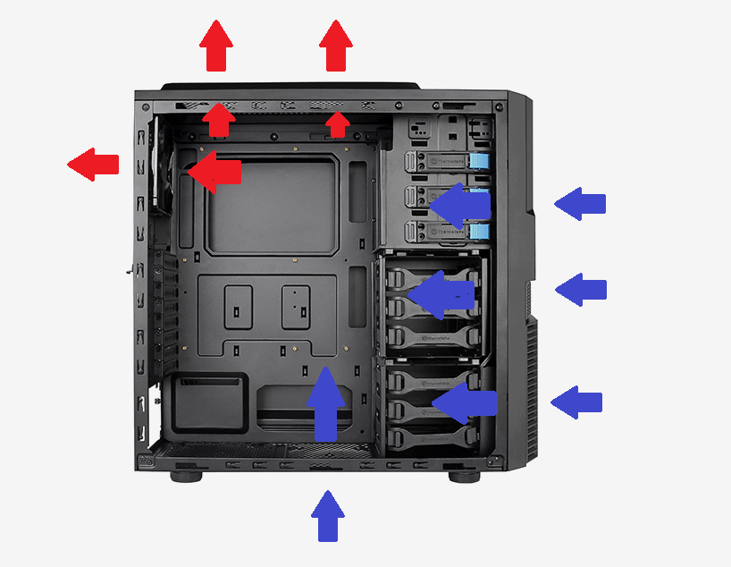
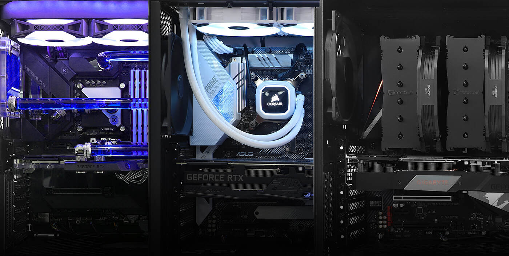

Chlazení
je činnost nutná k odvedení přebytečného tepla od součástek počítače, aby byla zajištěna jeho funkčnost v rámci technicky přípustné provozní teploty a zamezilo se poruchám z důvodu přehřátí počítače. Jednotlivé součástky jsou konstruovány tak, aby vytvářely co nejméně tepla například snižováním příkonu, přesto produkují tepla tolik, že je nutné odvést ho ven.
K odvedení tepla slouží nejčastěji kovové chladiče (pasivní) měděné nebo ze slitiny hliníku kvůli pevnosti, lehkosti a hlavně ceně, na které se dají připevnit malé plastové ventilátory (aktivní). Dále je možné využít kapalinové chlazení (nejčastěji je jako médium odvádějící teplo využívaná destilovaná voda nebo voda upravená tak, aby nebyla elektricky vodivá) nebo v extrémních případech kapaliny pod bodem mrazu (tekutý dusík nebo oxid uhličitý). Výrobci chlazení do počítačů vyvíjí co nejlepší tvary chladičů, aby byl odvod tepla co nejefektivnější.
Zdroje tepla
- Procesor – Nejvíce odpadního tepla zde vzniká při přepínání stavů tranzistorů během provádění jeho početních operací.
- Základní deska – Zde mají největší podíl napájecí obvody, které jsou složeny z tranzistorů, poté čipset, pak přídavné čipy, jako zvukový kodek, síťový čip a další, a pak třeba rezistory ad.
- Grafická karta – Zde nejvíc tepla produkuje GPU, pak napájecí obvody, poté paměti a pak součásti typu rezistorů a další.
- Pevný disk – Nejvíce tepla zde vytváří malý elektromotor, který otáčí disk.
- Zdroj – Jedná se o zařízení, které se nachází na konci chladicího systému, nicméně jím produkované teplo se může přes skříň přenášet i do prostoru skříně. Odpadní teplo zde vzniká především v transformátoru, usměrňovači a tranzistorech.
- Operační paměť – Tato součást vyzařuje obvykle o poznání méně tepla než ostatní součásti, přesto díky ploše a umístění obtížně chladí a tak mnohdy díky tomu dosahují teploty 60-70 °C a více.

Způsob chlazení
Způsob (logika) chlazení komponent může být mnohdy dosti individuální. Třeba chlazení každé součástky zvlášť nebo vedení proudu vzduchu tak, aby chladil všechny potřebné součásti najednou, jedná se o cílené proudění vzduchu.
Nejjednodušší způsob chlazení dnes používaný u skříní PC je nasávání na přední straně (buďto celá nebo přes HDD), poté okolo a před grafickou kartou směrem k procesoru a zdrojem ven. Většina ostatních typů chlazení staví na tomto osvědčeném základu.

Typy chlazení
Pasivní
Pasivní chladič je kovová nepohyblivá součástka, která má na sobě navařená žebra pro zajištění co největší plochy z důvodu lepšího předávání tepla okolnímu vzduchu. U menších verzí chladičů může jít o výrobek zhotovený z jednoho kusu kovu. Jedná se o součástku vyrobenou frézováním, upravenou laserem nebo jinak. Pasivní chladiče jsou až na výjimky (zakázkové a výroční chladiče) vyrobeny buďto z mědi (dražší) nebo z hliníku (levnější), případně kombinace obou. Často se kombinuje měď jako základna a hliník na žebra, pro dosažení dobrého poměru cena/chladicí efekt, anebo se případně mezi základnu a žebra přidávají heatpipes pro lepší odvod tepla (uvnitř je kapalina).
Heatpipes
Měděné válce s póry částečně naplněné kapalinou. Používají se pro převod tepla od základny chladiče (kontakt s čipem) k žebrům chladiče, které jsou umístěny dál od základny a více ve volném prostoru a díky tomu se mohou lépe chladit. Standardní průměr bývá 6 mm, ale někdy se používají průměry větší než 6 mm zejména pro použití u grafických karet a procesorů s vysokým vyzářeným tepelným výkonem (vysokou teplotu).
Aktivní chlazení
Aktivní chlazení je prováděno proudícím vzduchem. Proud vzduchu je obvykle vytvářen ventilátorem. Nejvíce používané ventilátory v počítačích mívají rozměry o hraně 80, 90/92 nebo 120 mm a 550-4000 otáčkách za minutu, dnes jsou preferovány nízkootáčkové ventilátory 700-1500 RPM a větší velikosti. Aktivní chlazení je použito pro chlazení procesoru, grafické karty, zdroje nebo pevných disků, případně některé součástky mohou být chlazeny proudem vzduchu vytvořeným poblíž některého dalšího větráčku (na procesoru atd.).
Ještě existují velikosti 25mm, 40mm, 45mm, 60mm, 70mm, 100mm, 130mm, 172x150mm, 175x175mm, 180x180mm, 220x220mm, 250x250mm a další…
Kombonované chlazení
Kombinované chlazení je použito nejčastěji, jde o pasivní chladič na kterém je nasazen chladič aktivní, který vytváří proud vzduchu procházející pasivním chladičem. Použití kupř. na procesorech (CPU, GPU) nebo i na Northbridgích.
Vodní chlazení
Vodní chlazení je uzavřená soustava, ve které probíhá chladicí médium – kterým je voda (nejlépe destilovaná).Okruh sestává z čerpadla, chladičů na jednotlivé chlazené komponenty (CPU, GPU, HDD, paměti RAM atd.), velkého pasivního chladiče (tzv. „radiátor“), který může obsahovat i chladiče aktivní a případně může být v obvodu i expanzní nádoba, díky níž se dá lépe kontrolovat a doplňovat voda.Radiátor bývá typicky umístěn na boku skříně či na jejích vrchu, kde má přímý přístup k čerstvému vzduchu.Vodní chlazení je zároveň velmi oblíbené u PC nadšenců díky širokým možnostem moddingu. Často se použijí průhledné hadice, průhledná expanzní nádobka nejrůznějších tvarů s podsvícením, světlocitlivá kapalina s výraznou barvou, UV světla a podobně.